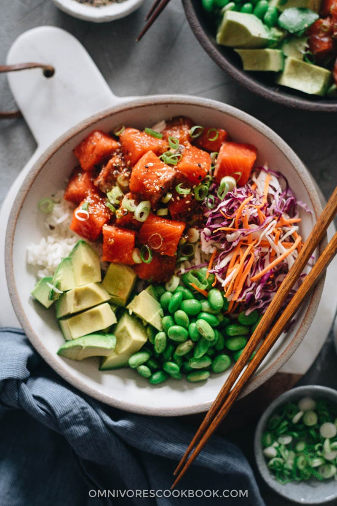

Salmon Poke Bowl

Description
Hmm. Who doesn't love fresh salmon? Here is a recipe to take advantage of the pink-coloured fish in a killer poke bowl!
Ingredients
- 1 cup sushi rice (200 g)
- 1 cup water (240 mL), plus more for rinsing
- 3 tablespoons rice vinegar
- 1 1/2 teaspoons sugar
- 1/2 teaspoon salt
- 8 oz wild-caught, sushi-grade salmon fillet (225 g)
- 2 tablespoons soy sauce
- 2 tablespoons lemon juice
- 1/2 avocado, thinly sliced
- 1/2 cucumber, halved lengthwise and thinly sliced
- 2 tablespoons pickled ginger
- 1 green onion, thinly sliced
- 5 small sheets nori
- 1/4 teaspoon toasted sesame seeds
- 1/4 teaspoon black sesame seeds
Steps
-
Add the rice to a fine mesh strainer and submerge in a bowl filled with water. Shake the rice a few times to remove excess starch.
-
Transfer the rice to a medium pot and add 1 cup (240 ml) of water. Cover the pot and bring to a boil over medium-high heat. Once boiling, reduce the heat to medium-low and simmer for 10 minutes. Remove the pan from the heat and let stand for 15 minutes.
-
Remove the lid and fluff the rice with a fork or rice paddle. Transfer the rice to a large bowl.
-
Mix together the rice vinegar, sugar, and salt and pour over the rice while still hot. Gently fold the rice to incorporate. Cover and set aside until ready to assemble the bowl.
-
Using a very sharp knife, gently slice the salmon fillet into ½-inch (1 cm) cubes. It may be easier to slice if you place the salmon in the freezer for a few minutes to help it firm up.
-
Just before assembly, place the salmon in a bowl and season with the soy sauce and lemon juice.
-
To assemble, place a few spoonfuls of rice into a medium bowl (use any leftover rice for another poke bowl or sushi). Top the rice with the seasoned salmon, avocado, cucumber, ginger, green onions, nori sheets, toasted sesame seeds, and black sesame seeds.
-
Enjoy!